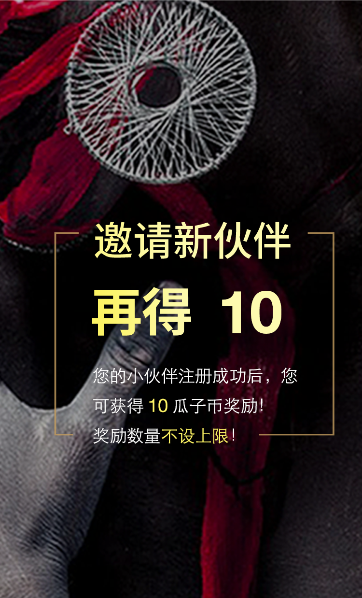

<!doctype html>
<html class="no-js">

<head>
  <meta charset="utf-8">
  <meta http-equiv="X-UA-Compatible" content="IE=edge">
  <meta name="description" content="西瓜虫娱乐">
  <meta name="keywords" content="西瓜虫,娱乐,演唱会,话剧,西瓜虫娱乐">
  <meta name="viewport" content="width=device-width, initial-scale=1, maximum-scale=1, user-scalable=no">
  <!-- Set render engine for 360 browser -->
  <meta name="renderer" content="webkit">
  <!-- No Baidu Siteapp-->
  <meta http-equiv="Cache-Control" content="no-siteapp" />
  <title>分享有礼</title>
  <link rel="icon" type="image/png" href="imgs/invite/logo@2x.png">
  <link rel="stylesheet" href="assets/css/amazeui.min.css">
  <!-- <link rel="stylesheet" type="text/css" href="css/base.css"> -->
  <style type="text/css" media="screen">
  body {
    position: static;
    background-image: url('imgs/share/ff.png');
    -webkit-background-size: cover;
    background-size: cover;
  }
  .share {
    position: absolute;
    width: 70%;
    left: 15%;
    bottom: 8%;
  }
  </style>
</head>

<body>
  <!--[if lte IE 9]>
<p class="browsehappy">你正在使用<strong>过时</strong>的浏览器，Amaze UI 暂不支持。 请 <a
  href="http://browsehappy.com/" target="_blank">升级浏览器</a>
  以获得更好的体验！</p>
<![endif]-->
  <!-- <header data-am-widget="header" class="am-header am-header-default">
    <div class="am-header-left am-header-nav back">
      <a href="javascript:;">
        
      </a>
    </div>
    <h1 class="am-header-title">       
      <span>分享有礼</span>           
    </h1>
  </header> -->
  <!-- <a href="index.html"> -->
  <!--  -->
  
  <!-- </a> -->
  <!--[if lt IE 9]>
<script src="http://libs.baidu.com/jquery/1.11.1/jquery.min.js"></script>
<script src="http://cdn.staticfile.org/modernizr/2.8.3/modernizr.js"></script>
<script src="assets/js/amazeui.ie8polyfill.min.js"></script>
<![endif]-->
  <!--[if (gte IE 9)|!(IE)]><!-->
  <script src="assets/js/jquery.min.js"></script>
  <!--<![endif]-->
  <script src="assets/js/amazeui.min.js"></script>
  <script src="http://res.wx.qq.com/open/js/jweixin-1.0.0.js"></script>
  <script src="js/common.js"></script>
  <script src="js/getwxConfig.js"></script>
  <script src="js/share.js"></script>
</body>

</html>
